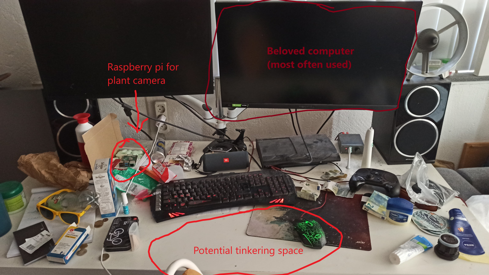
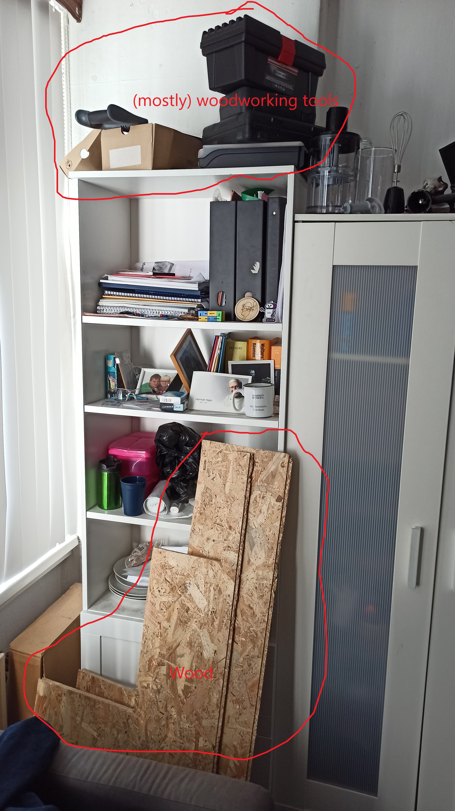
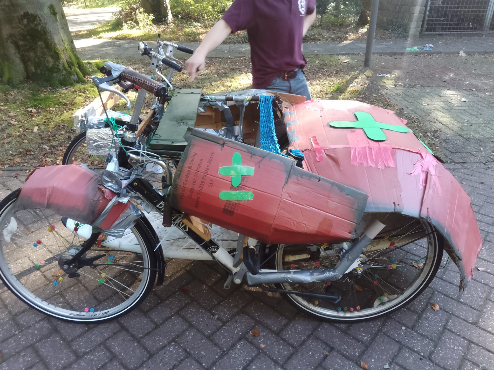
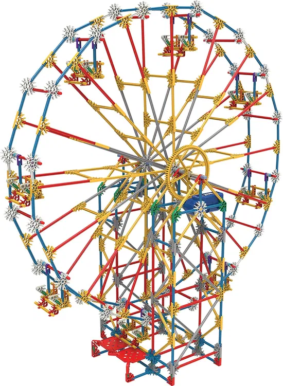
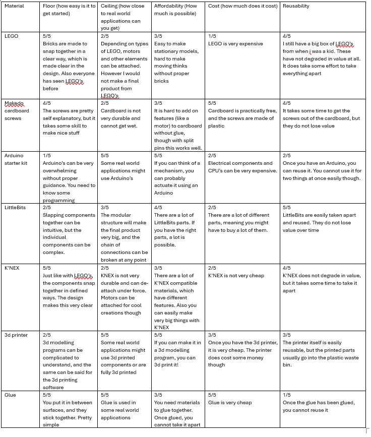

Figure 1: A photo of my desktop.

Figure 1: A photo of my tinker tool storage.

Figure 2: A photo of the soapbox I created with my fraternity for a soapbox race (we ended in the top 3).Figure 2: A first draft for a building block, dubbed the octopus block. This drawing is a slice along the length of the block, with the width being constant. This idea was discarded on the account of being boring.

Figure 3: An illustration of KNEX, which is really cool and inspired me to create molecules as a building block.Figure 4: A rough sketch of how magnets could replace the bonds betweeen individual peptides. The orange and red lines are magnets connecting to their corresponding colour.Figure 5: The secondary alpha helix protein structure of peptides.Figure 6: The secondary beta sheet protein structure of peptides.

Figure 6: The table with materials and their qualities, as made for assignment 2.